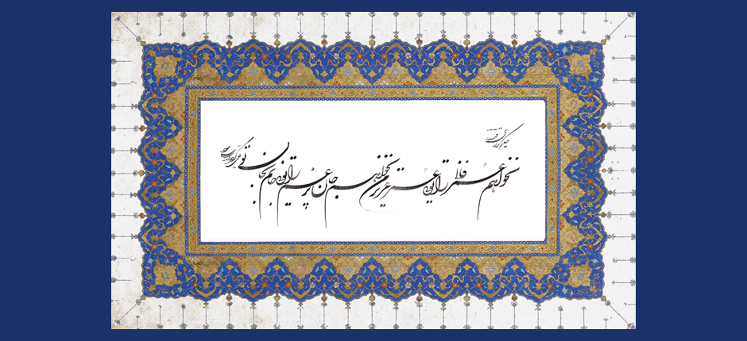

Music & Melodies of the Persian Ismaili Qasideh
Introduction | Modes | Melodies | Musical Instruments | Qasideh Tradition | Qasideh Collection
Qasideh | Digar barah bishuridam

Original calligraphy by Ustad Esmaili Mood from Iran inspired by verse 3 of the qasideh Digar barah bishuridam.
Original calligraphy by Ustad Esmaili Mood from Iran inspired by verse 3 of the qasideh Digar barah bishuridam.
Listen to Digar barah bishuridam:
| Translation | Transliteration | Lyrics |
|---|---|---|
| Once again, I have become restless and I am such that, upon your soul, I will tear and break any shackles that you put on me. | Digar bārah bishūrīdam bidān sānam bi jān-i tu Ki har bandī ki bar bandī bidarrānam bi jān-i tu | دگرباره بشوریدم بدان سانم به جان تو که هر بندی که بربندی بدرانم به جان تو |
| I am that lunatic in shackles that can place shackles on monsters; I know the language of the birds, and upon your soul, I am Solomon. | Man ān dīwānah-yi bandam ki dīwān rā hamī bandam Zabān-i murgh mīdānam Sulaymānam bi jān-i tu | من آن دیوانهی بندم که دیوان را همیبندم زبان مرغ میدانم، سلیمانم به جان تو |
| I do not need this ephemeral life; you are my beloved soul. I do not need this sorrow-filled soul; you are my soul, upon your soul. | Nakhāham ʿumr-i fānī rā, tuʾī ʿumr-i ʿazīz-i man Nakhāham jān-i pur gham rā, tuʾī jānam bi jān-i tu | نخواهم عمر فانی را، تویی عمر عزیز من نخواهم جان پرغم را، تویی جانم به جان تو |
| If you hide from me, I am all darkness and heresy; once you appear, I am a Muslim, upon your soul. | Chu tu pinhān shawī az man hamah tārīkī-u kufram Chu tu paydā shawī bar man musalmānam bi jān-i tu | چو تو پنهان شوی از من همه تاریکی و کفرم چو تو پیدا شوی بر من، مسلمانم به جان تو |
| If I have taken a sip of water from the jar, I have seen your image in it; if I have taken even one breath without you, I regret that breath, upon your soul. | Gar ābī khurdam az kūzah khīyāl-i tu darū dīdam Wagar yak dam zadam bī tu pashīmānam bi jān-i tu | گر آبی خوردم از کوزه خیال تو در او دیدم وگر یک دم زدم بیتو پشیمانم به جان تو |
| If I am high on heaven without you, I am sad like a dark cloud; if I am in gardens of flowers without you, it is like a prison for me, upon your soul. | Agar bī tu bar aflākam, chu abr-i tīrah ghamnākam Wagar bī tu bi gulzāram, bi zindānam bi jān-i tu | اگر بیتو بر افلاکم چو ابر تیره غمناکم وگر بیتو به گلزارم به زندانم به جان تو |
| Your name is the music of my ear; your cup of wine is the dance of my consciousness; come and restore me after all; I am all ruined, upon your soul. | Samāʿ-i gūsh-i man nāmat, samāʿ-i hūsh-i man jāmat ʿImārat kun marā ākhir ki wīrānam bi jān-i tu | سماع گوش من نامت، سماع هوش من جامت عمارت کن مرا آخر که ویرانم به جان تو |
| Guide! Within the monastery and the mosque, you are the only one I seek; I will turn in whatever direction that you turn, upon your soul. | Darūn-i ṣawmiʿah-u masjid, tuʾī maqṣūdam ay murshid Bi har sū rū bigardānī, bigardānam bi jān-i tu | درون صومعه و مسجد تویی مقصودم ای مرشد به هر سو رو بگردانی، بگردانم به جان تو |
| I am speaking to love as he is the lion and I am the antelope; what an antelope am I that I am guarding lions, upon your soul. | Sukhan bā ʿishq mīgūyam, ki ū shīr-u man āhūyam Chi āhūyam ki shīrān rā nigahbānam bi jān-i tu | سخن با عشق میگویم که او شیر و من آهویم چه آهویم که شیران را نگهبانم به جان تو |
| O denier within the soul! Do not hide your denials! I can read out the secret of your destiny for you, upon your soul. | Ayā munkir darūn-i jān makun inkārhā panhān Ki sirr-i sarnibishtat rā furū khānam bi jān-i tu | ایا منکر درون جان مکن انکارها پنهان که سر سرنبشتت را فروخوانم به جان تو |
| That Beloved who is beyond all qualities, graciously came close to this blood-filled heart; and this intimacy has completely cut me off from all my relatives, upon your soul. | Chi khīshī kard ān bī chūn ʿajab bā īn dil-i pur khūn Ki bubrīdast ān khīshī zi khīshanam bi jān-i tu | چه خویشی کرد آن بیچون عجب با این دل پرخون که ببریدهست آن خویشی ز خویشانم به جان تو |
| You are the festivity of the soul for sacrifice and lovers sacrifice themselves before you; kill me in your kitchen; I am your slaughtered one, upon your soul. | Tu ʿīd-i jān-i qurbānī-u pīshat ʿāshiqān qurbān Bikush dar maṭbakh-i khīsham ki qurbānam bi jān-i tu | تو عید جان قربانی و پیشت عاشقان قربان بکش در مطبخ خویشم که قربانم به جان تو |
| In the love of Shams-i Tabriz and in staying awake at nights and sleeplessness, I have become like a whirling particle, upon your soul. | Zi ʿishq-i Shams-i Tabrīzī, zi bīdāriyy-u shabkhīzī Mithāl-i dharrah-yi gardān, parīshānam bi jān-i tu | ز عشق شمس تبریزی ز بیداری و شبخیزی مثال ذرهای گردان پریشانم به جان تو |
 Download the mp3 of the Qasideh
Download the mp3 of the Qasideh
Last updated: 10/07/2014 13:15